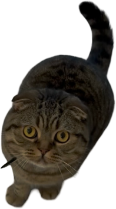
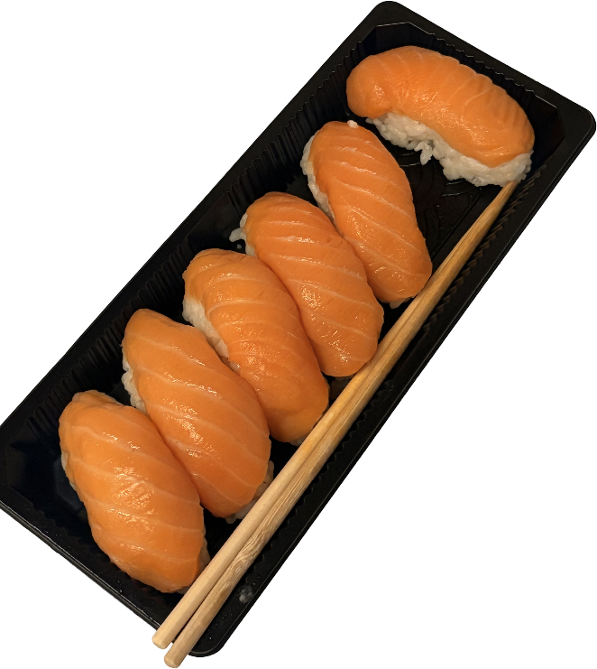
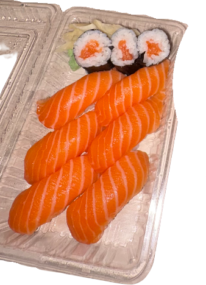
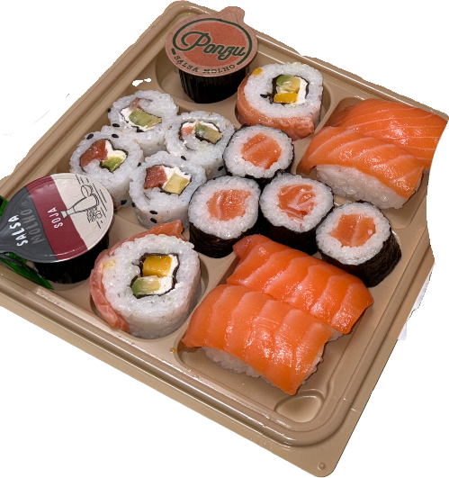
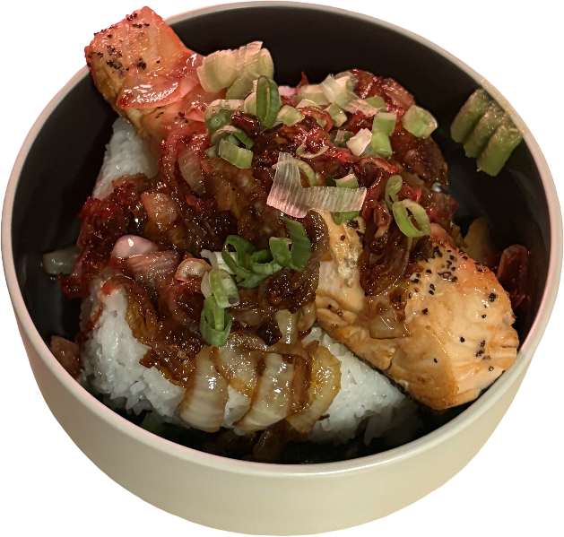
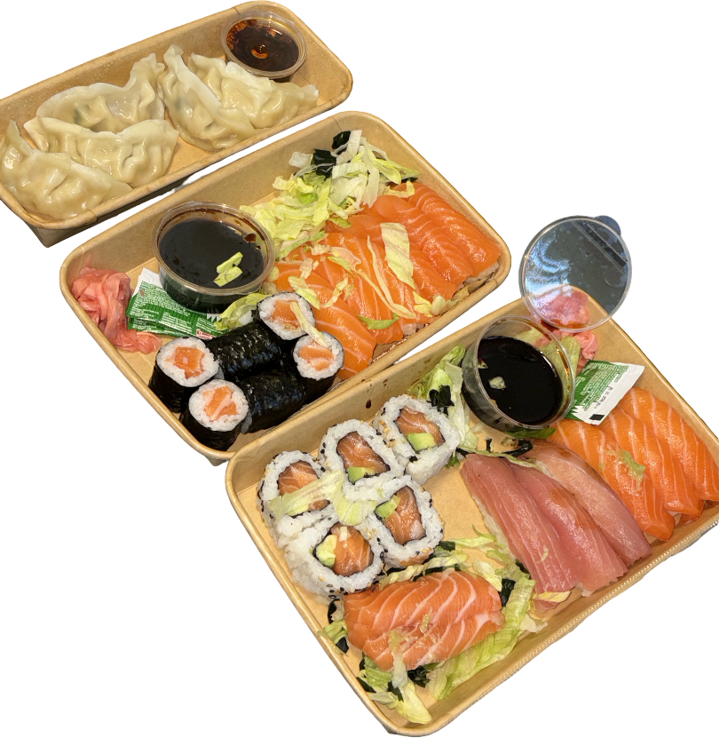
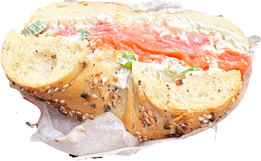
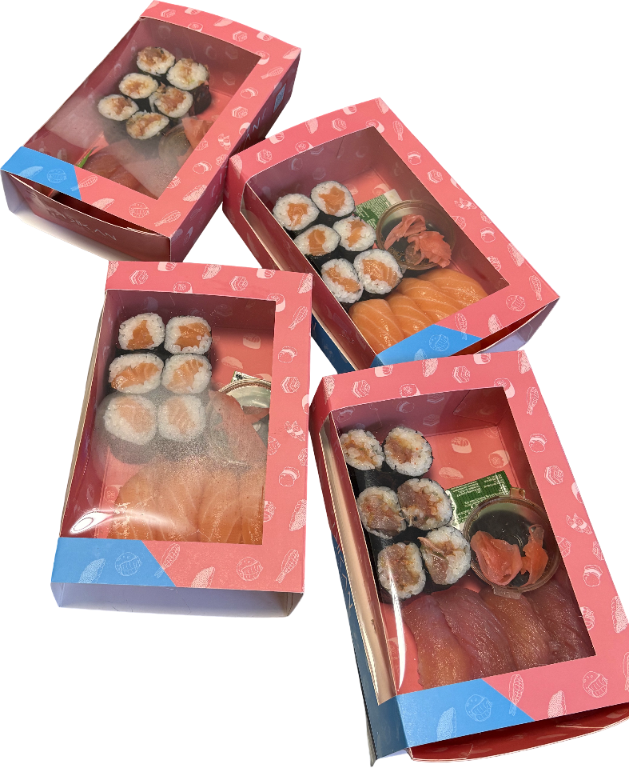
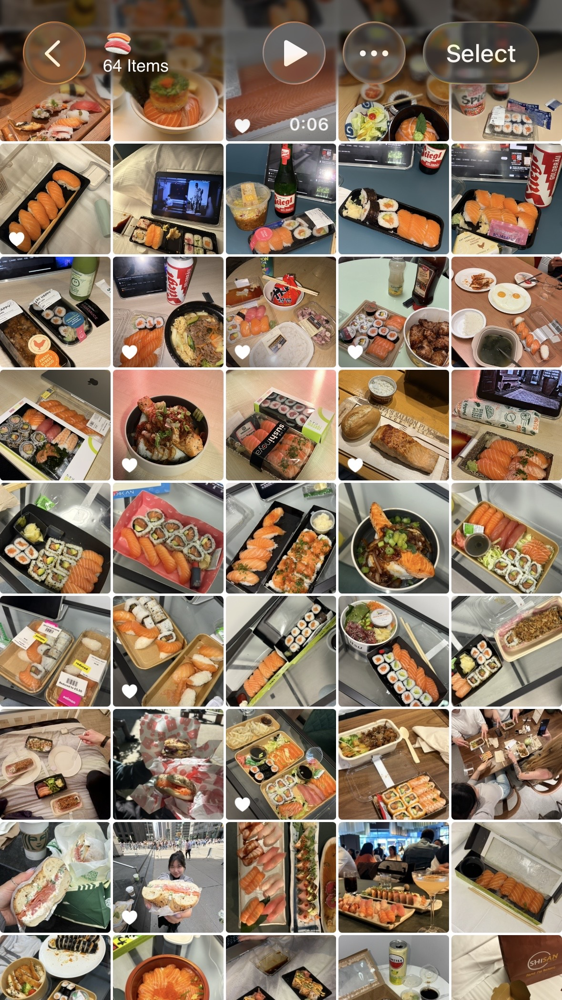

Juan Pablo연어를 먹는자. 런던에서 만난 유명한 복지 담당자이다. 친구의 오피스냥이.
작품 목록








특정한 음식을 먹는 행위는 그 음식을 둘러싼 상황을 추억하는 매개가 된다. 나에게 그 음식은 연어로, 지난 1년간 어디에서나 연어를 먹었다. 반복적으로 나열된 연어들은 비슷해 보이지만 함께한 사람, 장소, 날짜와 그날의 감정까지 모두 다르게 기록해주는 일기같은 존재이다.

Juan Pablo연어를 먹는자. 런던에서 만난 유명한 복지 담당자이다. 친구의 오피스냥이.







